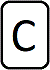
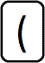
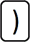
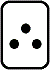

PrYE, Prove You Exist
Règles du jeu :
Le jeu est composé de 55 cartes : 4 de chaque variable (A, B, C ou D), 4 de chaque opérateur (ET, OU, =>), 6 cartes NON, 8 parenthèses, 3 cartes QED et 10 cartes particulières.
Chaque joueur (4 maximum) se voit assigné une variable (A, B, C ou D) au début du jeu.
À chaque manche, les joueurs essaient collectivement de créer une preuve de leur existence tout en réfutant l'existence des autres joueurs.
À chaque tour, un joueur pioche deux cartes et doit jouer deux cartes (éventuellement les défausser).
Lorsque une carte QED est jouée ou qu'il n'y a plus de carte dans la pioche la preuve est terminée.
À condition qu'il n'y ait pas de paradoxe, chaque joueur dont l'existence est prouvée reçoit un nombre de points égal au nombre de cartes dans la preuve.
Toutes les cartes sont ensuite mélangées et une nouvelle manche est lancée. Le premier joueur ayant 50 points gagne.
Concernant la construction de la preuve, un certain nombre de règles doivent être respectées :
- la preuve doit avoir au maximum 4 lignes. Dès qu'elle atteint 4 lignes, toutes les cartes supplémentaires doivent être jouées sur une de ces lignes ;
- chaque ligne doit être syntaxiquement correcte (deux opérateurs ou deux variables ne peuvent pas se suivre, chaque parenthèse ouvrante doit correspondre à une parenthèse fermante, ...) ;
- une carte peut être insérée entre deux cartes déjà posées à condition que le résultat reste syntaxiquement correct ;
- les priorités sont (du plus prioritaire au moins prioritaire) : NON, ET, OU, IMPLIQUE. Si plusieurs cartes ont le même niveau de priorité, la lecture se fait de gauche à droite. Par exemple, A => B ET C => D représente (A => (B ET C)) => D ;
- on utilise les règles usuelles de logique : lois de Morgan, Modus Ponens, ...
Comment jouer :
Dans la fenêtre d'introduction vous pouvez choisir le mode de jeu :
- à plusieurs joueurs (4 maximum);
- face à l'ordinateur.
À chaque tour, vous pouvez déposer sur les lignes de votre choix deux cartes au maximum grâce à la souris.
Si vous voulez vous défausser d'une carte, faite glisser celle-ci sur pile.
Vous pouvez retourner un parenthèse dans votre main à l'aide d'un clic droit.
Le joueur courant est toujours celui en haut à gauche.
Les cartes
-  : les variables représentant chaque joueur ;
- : les cartes NON, ET, OU et IMPLIQUE;
-
 : ces cartes permettent de choisir la variable ou l'opérateur ;
: ces cartes permettent de choisir la variable ou l'opérateur ; -   : les parenthèses ;
Les cartes spéciales
- La carte Fallacy : en posant cette carte sur le nom d'un joueur, ce dernier n'a pas le droit de poser de carte sur la preuve pendant 3 tours. Il peut cependant jouer des cartes Fallacy ou Justification;
-
 La carte Justification : annule la précédente;
La carte Justification : annule la précédente; -
 La carte Tabula Rasa : permet de supprimer une carte d'une prémisse et de la remettre à la fin du paquet (en cas d'erreur, appuyer sur echap pour annuler);
La carte Tabula Rasa : permet de supprimer une carte d'une prémisse et de la remettre à la fin du paquet (en cas d'erreur, appuyer sur echap pour annuler); - La carte Revolution : permet d'échanger deux cartes dans les prémisses;
-  La carte QED : ne peut être jouée que si toutes les lettres sont présentes dans les prémisses. Elle permet alors de mettre fin au tour.